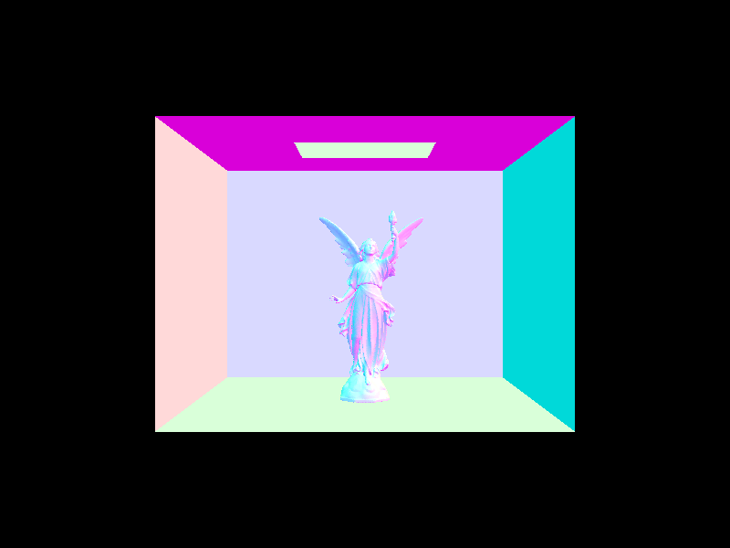
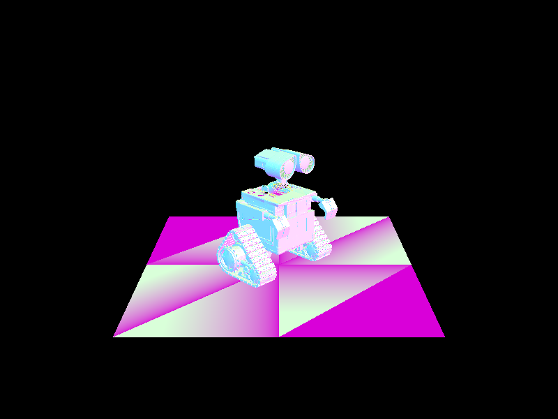

In this portion of the project we worked on various aspects of the ray-tracing pipeline and implemented efficient shading of surfaces and objects. We began this endeavor by working according to the first principle of ray-tracing, generating rays and their intersections with objects. We used the bounding volume hierarchy data structure (BVH) in order to necessarily speed up long tests. We then implemented calculations for direct illumination (zero bounce and one bounce) based on physical rules of light and our ray implementations. We complemented these calculations with their counterpart: implementations for indirect illumination which procured seamless images using global illumination principles. Lastly, we performed an optimization called “adaptive sampling” in order to short circuit sampling once pixels have converged to an appropriate level.
Part 1: Ray Generation and Intersection
Our ray generation algorithm consists of two steps. First, we converted the input world image coordinates to camera coordinates by using the transformation (tan(hFov/2), tan(vFov/2), -1). Secondly, we converted the transformed coordinates into world space and then normalized them. In order to generate pixel samples, we had to change the underlying coordinate system from the world space to the image space by dividing the given (x, y) coordinates by the width and height of the image space respectively. Keeping in mind that the origin of the coordinate space is the bottom left corner, we iterated over the number of samples and used the gridSampler object to attain new sample points to pass into the generate ray function. We then used these points to update our sample and sampleCount buffers.
In order to test for triangle intersection, we manipulated the 3D triangles’ normal and area properties to compute barycentric coordinates to then test if a point evaluated at time t is inside a given triangle. Using the cross product of the differences between the triangle’s vertices, we computed the normal of the triangle which we then used to compute the intersection time t from the ray equation (p^’ - o) (dot)N / (d (dot) N). We had to verify that this intersection time t lay in the appropriate interval (min_t, max_t). We finally derived the barycentric coordinates using proportions of the triangles’ areas which are equal to the squared norm of the corresponding normal vectors. Finally, we verified that the resulting coefficients were between 0 and 1 and then updated the arguments for isect with the discovered information. Sphere intersection tests are extremely similar with the caveat that intersection tests for a given point may be computed by using the ellipsoid equation (p-c)^2 <= r^2. And so the intersection values t_min and t_max simply become the roots of the final quadratic equation.

|
Part 2: Bounding Volume Hierarchy
The first thing I needed to do was get the number of primitives and the size of the BBox. I did this by using a for loop that expanded the current BBox and also added to the primitive count. We also had to set the start and end pointers to be the ones passed into the function. Afterwards, I check to see if the primitive count is less than the max leaf size. If it is, we set the left and right nodes of the main node to be NULL. If it wasn’t, we would need to split up start and end into two branches where we would recursively call construct_bvh. Originally, I wanted to split it up based on the middle centroid of the longest axis. However, I was running into too many segfault errors so I decided to just split it by the median primitive.
The cow took around 40 seconds to run without BVH acceleration and less than a second with BVH acceleration. The more complex scenes such as the maxplanck would take a very long time to render but can render in a matter of a few seconds using BVH. BVH acceleration is much faster than the original construction because it runs in log(N) time as opposed to (N) time. It recursively splits up the tree in two at each level, making it run in log time.
|  |  |
Part 3: Direct Illumination
For the implementation of the f function, we simply returned reflectance/pi due to uniformity. The returned zero bound illumination was just the BSDF output for an intersection. For direct lighting with uniform hemisphere sampling, the uniform hemisphere concept implies a pdf of 1/2pi, which is the pdf we then used. We then iterated over num_samples and for each iteration we sampled a ray direction and converted it to the world basis so that we would have the ray in the correct spatial point. Using the radiance equation from lecture, we then summed up the radiances per iteration and divided this summed value by num_samples for the final integral value. For direct lighting by importance sampling lights, we looped over all ScenceLight objects and generated rays in the same way as before for ns_area_light samples per SceneLight object. The difference between the approach here and that of uniform hemisphere sampling is that we project the angle in an opposite direction, have an arbitrary pdf rather than a uniform one, and keep track of the distance to the light at a given point in time from which we then set the parameter max_t appropriately. We then check for an intersection, use the reflectance equation to evaluate radiance, and then normalize the light value by the number of samples for that iteration. Lastly, we return the summed value of all the normalized radiances.
The benefit of importance sampling is that it uses useful information which allows it to converge with less noise and less ray usage. The uniform approach casts rays in random directions, which leads to a larger amount of noise and “misfires” or uninformative casts.
Part 4: Global Illumination
For the first part, we used sample.get_sample(pdf) and we set the wi to this value. We then calculated f(wi -> w0) using reflectance / PI. We weren't able to test our 4.1 but our algorithm would've first called coin_flip and then recursively called at_least_one_bounce_radiance().
Part 5: Adaptive Sampling
Now whenever we check or loop through a sample, if we hit a certain quote of samplesPerBatch we need to check for convergence by approximating a 95% confidence interval. We compute the sample statistics for this interval by using the illuminance metric derived from each radiance value. After we have the sample statistics, we validate the condition: 1.96(root(sigma) * n) <= maxTolerance * mu which then verifies that the value has already converged and we may short circuit. Another edit now is that since we may have short circuited the loop with the above condition, we must accordingly divide the final summed radiance value by the amount of iterations of the loop prior to stopping rather than by num_samples. Lastly, we update the sampleCount buffer with the final radiance. .